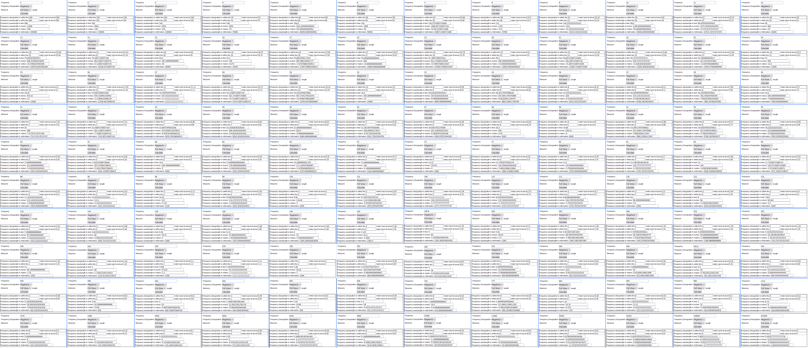
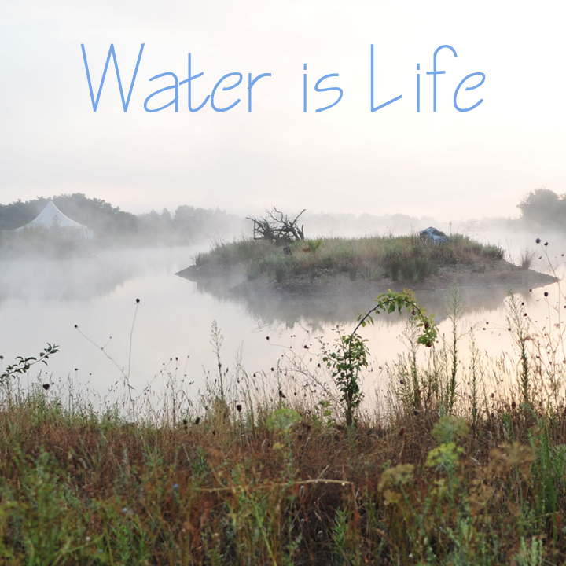
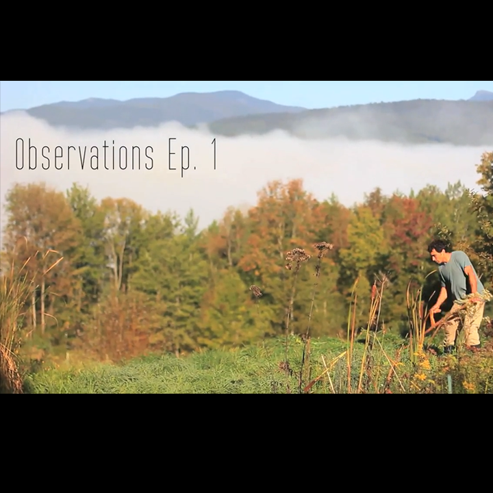
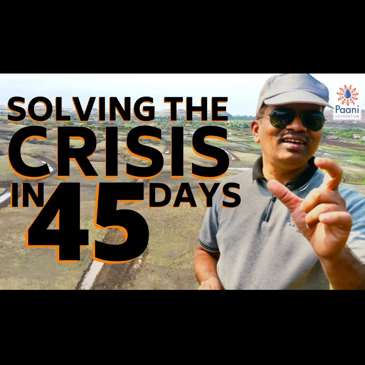
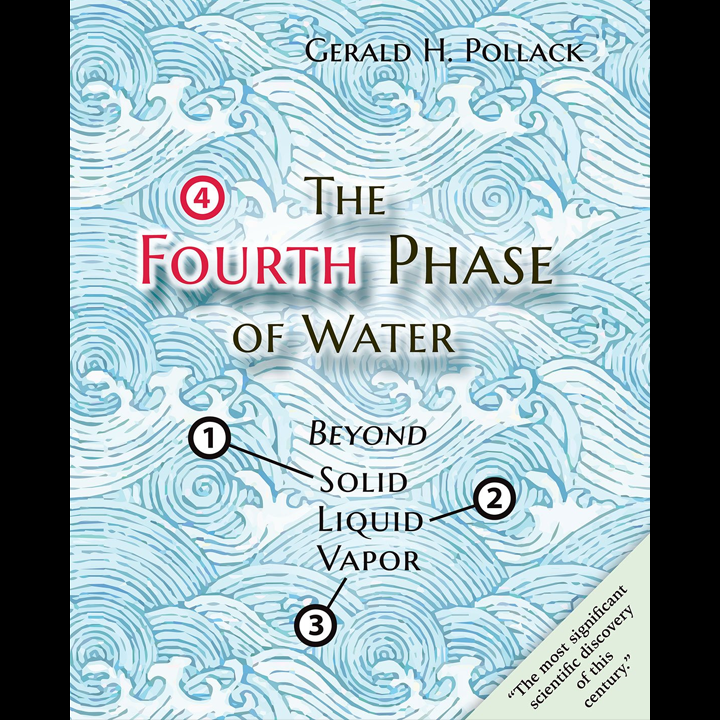
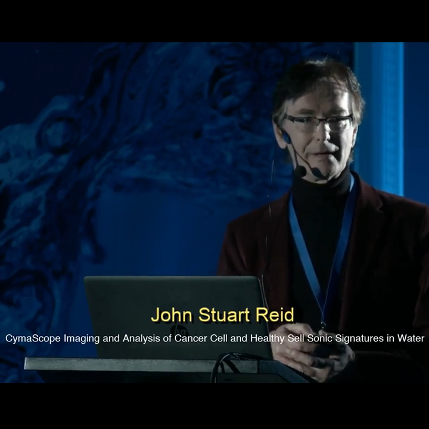
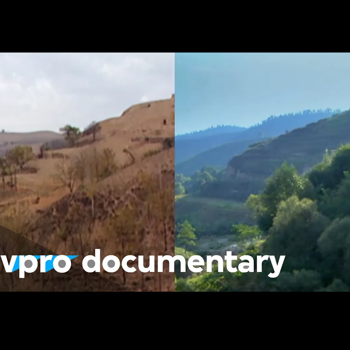

Index
Index
Codex
Bloomhaven
Reference
Music
The Garden Song

EM Frequency to Wavelength Proportional Number Sheet
Articles
Hippophae Rhamnoides
Citrus of the North
Other Links
WTF Happened in 1971?
Your browser does not support the video tag.
The recent Sun at a wavelength of 193 Ångstroms (19.3 nanometers)
(as of 09-24-25: unknown Solar Dynamics Observatory server issue starting 09-13-25)
×
←
→
Water is Life - The Water Retention Landscape of Tamera

Northeast Permaculture Film Project: Observations Ep.1 - Ben Falk

A Simpler Way: Crisis as Opportunity (2016) - Free Full Documentary
What is a Food Forest with Geoff Lawton
India's Paani Foundation - Water Revolution Playlist

The Fourth Phase of Water: Dr. Gerald Pollack at TEDxGuelphU

John Stuart Reid: CymaScope Imaging and Analysis of Cancer Cell - Water Conference 2018

Regreening the desert with John D. Liu | VPRO Documentary | 2012

Bottle to Bottle Honey Production | Contactless Beekeeping - Advoko Makes
Water Retention Landscapes | Zach Weiss
FOLI | there is no movement without rhythm | Thomas Roebers and Floris Leeuwenberg
Fools & Dreamers | 30 Years Turning Degraded Land into a Preserve
Permaculture Ponds: Why, Where & How | Andrew Millison
Biodigester Turns Waste into Campus Energy at UC Davis